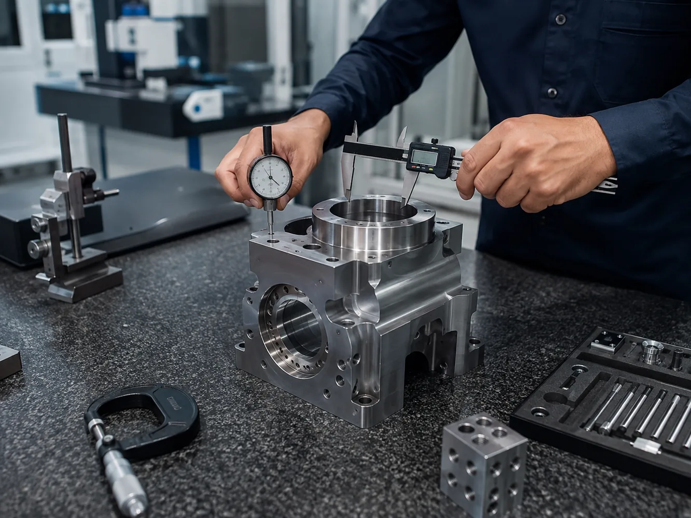

Crecer Grande division
Inspection & QA Support
Dimensional, visual and pre-dispatch inspection support, vendor-quality follow-up and structured reporting.

Division overview
Practical support aligned to the actual requirement.
Pre-dispatch, dimensional, visual and vendor-quality support within an agreed inspection scope.
Final scope, deliverables, lead time and technical responsibility are confirmed against the actual requirement before work begins.
Inspection
- Pre-dispatch inspection
- Dimensional checks
- Visual inspection
- Drawing / quantity verification
Quality Documentation
- Inspection reports
- Photographic records
- NCR observations
- CAPA verification support
Vendor Quality
- Stage inspection support
- Supplier-quality follow-up
- First-off / sample checks
- Document review within agreed scope
Discuss this requirement with Crecer Grande.
Send the available drawing, photograph, machine details, part number or problem statement.